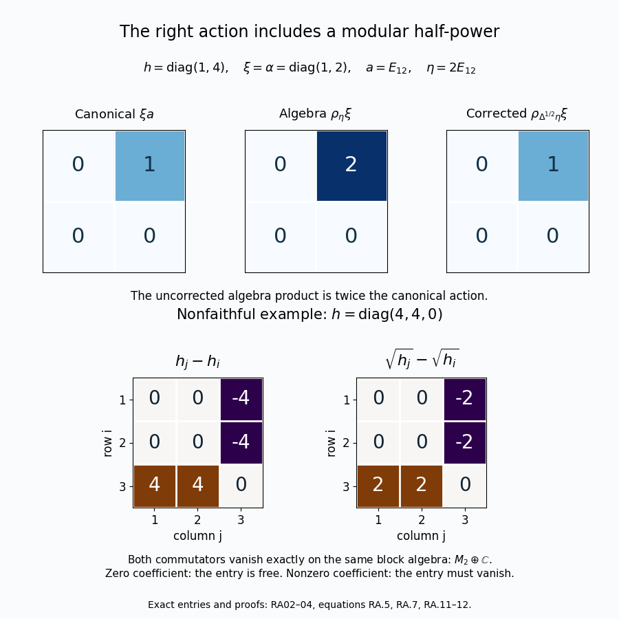

Right action and the centralizer of a positive functional
Independently written by OpenAI Codex (AI), October 2026. New prose: CC0-1.0. Draft.
A standard representation carries commuting left and right actions of the algebra. On a Tomita algebra, the right action of a left multiplier contains a modular half-power correction. For a positive normal functional, commuting with its canonical cone vector is exactly the same as commuting with the functional. We prove both assertions without assuming that the functional is faithful.
The immediate written inputs are the module construction CL06, the multiplication representation HA02, the abstract Tomita-algebra theorems MF10 and MF11, the standard-form axioms SF05, the unique positive representative SF10, the commutator estimate NC21, and the bounded calculus BK01. The endpoint comparison uses HS04. The matrix checks use HM04. A free comparison for the standard-form axioms and the Hilbert–Schmidt model is Hiai, Concise lectures on selected topics of von Neumann algebras, Definition 3.5 and Example 3.6(2), page 22.
The opposite action and conjugation
Let \((M,H,J,P)\) be an arbitrary standard form. Inner products are linear in the first variable. For \(x\in M\) and \(\xi\in H\), define \[ R_x=Jx^*J,\qquad \xi x=R_x\xi,\qquad \xi^*=J\xi. \tag{RA.1} \] Taking the operator adjoint and conjugating by \(J\) are both conjugate linear, so \(x\mapsto R_x\) is complex linear. The identities \(J^2=1\), \((xy)^*=y^*x^*\), and the antiunitary pairing give \[ R_xR_y=R_{yx},\qquad R_x^*=R_{x^*},\qquad (\xi x)y=\xi(xy). \tag{RA.2} \] These are also proved in CL06. Since \(JMJ=M'\), the right action has image exactly \(M'\), and commutes with the left action. Both actions have operator bound \(\|x\|\). In particular, this is a bimodule on all of \(H\). Its conjugation satisfies \[ (x\xi)^*=Jx\xi=(JxJ)J\xi=\xi^*x^*. \tag{RA.3} \] The star on a Hilbert vector means \(J\), whereas the star on an algebra element means its operator adjoint. These formulas do not assert that every pair of Hilbert vectors can be multiplied.
The half-power correction in a Tomita algebra
Let \(\mathcal A_0\) be any abstract Tomita algebra as in MF10–11, with left multipliers \(\lambda_\eta\), right multipliers \(\rho_\eta\), closed involution \(S=J\Delta^{1/2}\), and algebra involution \(\eta^\sharp=S\eta\). This algebra is invariant under \(J\), its involutions, and complex modular powers. Its vectors therefore lie in the actual domains used below. MF10 identifies its abstract analytic group with the actual modular powers, including their full domains; MF11 proves the bounded multiplier identity \[ \rho_\zeta=J\lambda_{J\zeta}J \quad(\zeta\in\mathcal A_0). \tag{RA.4} \] For \(\eta\in\mathcal A_0\), take \(\zeta=J\eta^\sharp=JS\eta=\Delta^{1/2}\eta\in\mathcal A_0\). By HA02 the left representation respects the algebra involution. Substitution into (RA.4) gives \[ \begin{aligned} R_{\lambda_\eta} &=J\lambda_\eta^*J =J\lambda_{\eta^\sharp}J =\rho_{\Delta^{1/2}\eta},\\ \xi\lambda_\eta&=\rho_{\Delta^{1/2}\eta}\xi \quad(\xi\in H). \end{aligned} \tag{RA.5} \] Both sides are bounded operators on \(H\), so their equality holds for every \(\xi\), not only for an algebra vector. On \(\mathcal A_0\), the last term is the algebra product \(\xi\cdot\Delta^{1/2}\eta\). It is generally not \(\rho_\eta\xi\). The half-power domain and right boundedness of the corrected vector follow from the specified Tomita algebra; no product by an arbitrary vector of \(H\) is being introduced.
There is a stronger GNS endpoint counterpart. Let \(\varphi\) be a faithful normal semifinite weight with modular group \(\sigma\). If a bounded \(a\in M\) has a bounded operator-valued extension \(F\) of \(t\mapsto\sigma_t(a)\) to \(-1/2\le\operatorname{Im}z\le0\), sigma-weakly continuous on the closed strip and holomorphic inside, write \(b=F(-i/2)\). HS04 proves \[ xb\in\mathfrak n_\varphi,\qquad \Lambda_\varphi(xb)=Ja^*J\Lambda_\varphi(x) =\Lambda_\varphi(x)a \quad(x\in\mathfrak n_\varphi). \tag{RA.6} \] That theorem proves membership on the whole finite left ideal by closed GNS graphs. The statement applies even when \(a\) is not entire and even when \(\varphi(1)=\infty\). The Tomita-algebra identity (RA.5) itself needs only (RA.4) and its actual half-power domain.
Functional commutation is vector commutation
Let \(\phi\in M_*^+\) be any bounded normal positive functional. Let \(\xi=\xi_\phi\in P\) be its unique cone representative from SF10, and define \([x,\phi](a)=\phi(ax-xa)\). For every \(x\in M\), \[ [x,\phi]=0\quad\Longleftrightarrow\quad x\xi=\xi x. \tag{RA.7} \] For the implication from right to left, NC21 proves \(\|[x,\phi]\|\le2\|\xi\|\|x\xi-\xi x\|\). Its proof permits an arbitrary, not necessarily self-adjoint, \(x\), and includes \(\phi=0\).
For the converse let \(C\) be the set of \(x\in M\) satisfying \(\phi(ax)=\phi(xa)\) for every \(a\in M\). This is a norm-closed complex linear space containing \(1\): each defining test is a bounded linear functional of \(x\). A positive functional is real on self-adjoint elements, since adding a scalar multiple of \(1\) makes such an element positive; decomposing into real and imaginary parts consequently gives \(\phi(b^*)=\overline{\phi(b)}\). Apply this to the defining relation at \(a^*\) to see that \(x\in C\) implies \(x^*\in C\). If \(x,y\in C\), then \[ \phi(axy)=\phi(yax)=\phi(xya)\quad(a\in M), \tag{RA.8} \] so \(xy\in C\). Thus the self-adjoint real and imaginary parts of every \(x\in C\) also belong to \(C\).
Fix one such self-adjoint element \(h\). The norm-convergent exponential series and norm closure of \(C\) give \(u_t=e^{ith}\in C\) for all real \(t\). BK01's bounded functional calculus makes \(u_t\) unitary. The relation defining \(C\), applied to \(u_t\) and \(a'=u_t^*a\), gives \(\phi(u_t^*au_t)=\phi(a)\).
The operator \(U_t=u_tJu_tJ\) is unitary, since its two unitary factors commute. SF05 gives \(U_tP\subseteq P\), and applying it to \(u_t^*\) gives the reverse inclusion. Commutation of the right factors with \(M\) gives \(U_t^*aU_t=u_t^*au_t\). Therefore \(U_t\xi\in P\) represents \(\phi\). Uniqueness in SF10 implies \[ U_t\xi=\xi,\qquad u_t\xi u_t^*=\xi, \qquad u_t\xi=\xi u_t. \tag{RA.9} \] The last equality follows by multiplying the middle one on the right by \(u_t\), using (RA.2).
For \(t\ne0\), the exponential-series remainder satisfies \[ \left\|\frac{u_t-1}{t}-ih\right\| \le\tfrac12|t|\|h\|^2e^{|t|\|h\|} \longrightarrow0. \tag{RA.10} \] Indeed, bound each term of order \(n\ge2\) and use \(1/n!\le1/(2(n-2)!)\). The two module actions are bounded and complex linear. Taking their norm derivatives in (RA.9) therefore gives \(h\xi=\xi h\). Apply this to both self-adjoint parts of \(x\in C\) and add to obtain \(x\xi=\xi x\), completing the proof. No faithfulness, support reduction, separability or faithful reference state is required. When \(\phi=0\), its representative is \(0\), and both conditions in (RA.7) hold for every \(x\).
Two exact matrix checks
First take \(h=\operatorname{diag}(1,4)\), \(\alpha=h^{1/2}=\operatorname{diag}(1,2)\), and Hilbert–Schmidt GNS coordinates \(\Lambda(a)=a\alpha\). Put \(a=E_{12}\), \(\eta=\Lambda(a)=2E_{12}\), and \(\xi=\alpha=\Lambda(1)\). HM04 gives \(\Delta^{1/2}\eta=E_{12}=\Lambda(a/2)\). Thus \[ \begin{aligned} \xi a&=\alpha E_{12}=E_{12},\\ \rho_\eta\xi&=\Lambda(a)=2E_{12},\\ \rho_{\Delta^{1/2}\eta}\xi&=\Lambda(a/2)=E_{12}. \end{aligned} \tag{RA.11} \] The algebra product is \(\Lambda(x)\cdot\Lambda(y)=\Lambda(xy)\). It must be distinguished from ordinary multiplication of the displayed Hilbert–Schmidt matrices. Equation (RA.11) checks the half-power correction and exhibits the error from omitting it.
Next take \(h=\operatorname{diag}(4,4,0)\), \(\alpha=\operatorname{diag}(2,2,0)\), and \(\phi(a)=\operatorname{Tr}(ha)\) on \(M_3\). Expanding finite matrix traces, and interchanging the two finite summation indices, gives \[ \begin{aligned} \bigl[x,\phi\bigr](a)&=\operatorname{Tr}((xh-hx)a),\\ (xh-hx)_{ij}&=(h_j-h_i)x_{ij},\\ (x\alpha-\alpha x)_{ij} &=(\sqrt{h_j}-\sqrt{h_i})x_{ij}. \end{aligned} \tag{RA.12} \] Testing the first line against every matrix unit proves that functional commutation is equivalent to \(xh=hx\). The coefficients in the last two lines vanish for exactly the same index pairs. Both commutation conditions therefore give the block algebra \(M_2\oplus\mathbb C\): the upper \(2\times2\) block and the final diagonal entry are arbitrary, and every cross-block entry is zero. This example retains a nonzero kernel and checks the nonfaithful assertion in (RA.7).

Figure. Top: all entries of the three \(2\times2\) matrices in (RA.11). Bottom: the exact coefficients multiplying \(x_{ij}\) in the two commutators of (RA.12). Their zero positions coincide and allow precisely \(M_2\oplus\mathbb C\). These are finite examples of the general proofs in RA02–03, not assumptions of those proofs. Reproducible figure source: assets/render-right-action-and-centralizer.py.
Reference and scope
F. Hiai, Concise lectures on selected topics of von Neumann algebras, Definition 3.5 and Example 3.6(2), page 22: free author text. The standard-form axioms and model provide the comparison; the module, domain and commutation proofs are given above and in the linked programme lessons. The commutation theorem concerns bounded positive normal functionals and bounded algebra elements. It does not assign complex values to infinite weights outside their finite linear domains.